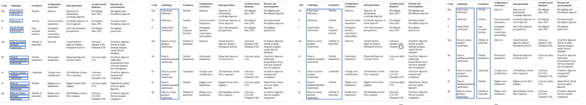
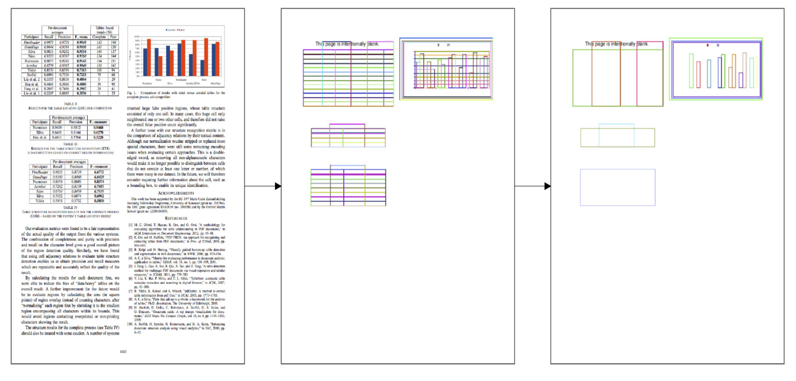

??: Machine Learning for Table Detection in PDF documents
Post by Ines Chami, Payal Bajaj, Stephen Bach and Chris Ré
The source code is made available at hazy research git and we provide a demo tutorial at notebook
Snorkel is currently being used for information extraction from unstructured data, namely text. Text mining can however be a limiting approach since important knowledge and relational information can also be found in semi-structured data such as tables or figures. Fonduer has been recently developed for information extraction from richly formatted data, where "information is conveyed via combinations of textual, structural, tabular, and visual expressions". A crucial step in this process is the localization of tables in PDF documents. Previous methods were proposed for table detection but they all relied and human engineered features and would exhibit a high variance from one dataset to another. We developed a robust machine learning approach for table detection and we walk through the different steps in this blog post.
We present below some examples of tables found in PDF documents.
As shown in the examples above, tables can vary greatly from one document to another. For instance, tables can be horizontal or vertical, tables can have vertical lines of not, tables can span multiple pages, tables can have a caption or not, tables can contain text or numbers... Previous methods were based on heuristic rules to detect tables. For instance, some methods rely on the caption "table" to reduce the search area to the one around the word "table". Other methods rely on the presence of lines to detect tables. However, these heuristic based approaches would only work for the type of tables they were built for.
We proposed a robust machine learning algorithm that can detect tables in PDF documents and that generalizes easily to any type of table.
Our method can be broken down into four units:
Candidates generation: Given a pdf document, we first generate a set of candidate regions for tables. To generate those candidates, we analyze alignment of text and position of lines.
Features Extraction: For each candidate region, we extract a set of features (24 in total). This is a crucial step compared to heuristic based approaches since we can use any type of features, even those which are very specific. The algorithm will learn which features are significant.
Labels generation: This steps allows us to build a label vector of 0 and 1. To do so, we compute the intersection of union (IOU, in terms of area) between a candidate region and ground truth tables. If IOU is greater than some threshold (currently 0.8), we label the candidate as a true table region.
Candidates classification: We then train a machine learning classifier to predict whether a candidate region is a table or not. We use a logistic regression model for this task.
The candidate generation is essentially based on two structural properties often found in tables that are structural alignment of text and presence of lines in tables.
Alignments: text within tables is often aligned, that is the elements within a table are often centered around the same vertical (or horizontal) axis within a column (or row).
We use structural alignments of text in PDF documents to generate tables candidates. Given the bounding boxes of each word in a document we first create small clusters of text aligned in adjacent rows and iterate this procedure with adjacent rows or adjacent columns. This iterative clustering strategy allows us to generate multiple candidates, with various sizes as shown below.

Lines: The presence of vertical or horizontal lines in tables is a common fact and we use it to generate additional candidates. We use a procesing library that extracts lines coordinates in PDF documents. We first merge small segments that lie next to each other and add additional lines to create bounding boxes. For instance, if two lines are vertically aligned, we add add vertical lines at the edges to create a bounding box. We then iterate over all lines coordinates in order to find pairs of horizontal and vertical lines that have the same (top, left) coordinates and return the corresponding bounding box as a table candidate. This procedure is illustrated below.

number of lines within a candidate region
proportion of digits in text within a region
average white spacing between words
number of columns, rows that are aligned
text area coverage (area covered by text / region area)
... and many others!
It is always hard to reduce a retrieval problem to a simple classification task. In our setting, our goal is to retrieve tables regions but we need ground truth labels to classify the candidates that we generated. To generate these labels, we computed the maximum intersection over union (iou, in terms of area) for each candidate with all the ground tables region. When this iou was greater than some preset threshold, we labeled the candidate as a true table region. A model is then trained logistic regression classifier. During test time, our model allows user to simply reuse the pretrained model to extract tables for any test PDF.
Weak supervision: collecting training data for table detection is hard. We build an annotation that allows us to render pdf pages and manually crop table regions. However, sicne this can be very time consuming for more than hundreds of documents. We are currently working towards a weak supervising approach, namely use our current small model to generate more training examples and use these noisy data to train larger models.
Visual Features: Tables are not only structurally but also visually differentiable from other parts of a document. We are working towards a computer vision approach that would allow us to also extract and add visual features into the loop
Tree Structure: Our end goal is the construction of a hierarchical tree of context objects such as text blocks, figures, tables, etc.
TODO:should I talk about pdf miner as preprocessing step or not relevant?
TODO: Payal, detail alignments?
TODO: define horizontal and vertical alignments
TODO: add candidates image
TODO: add final results image
TODO: find project name and replace background image